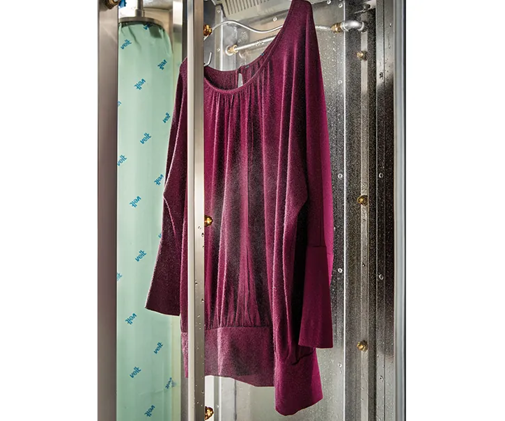
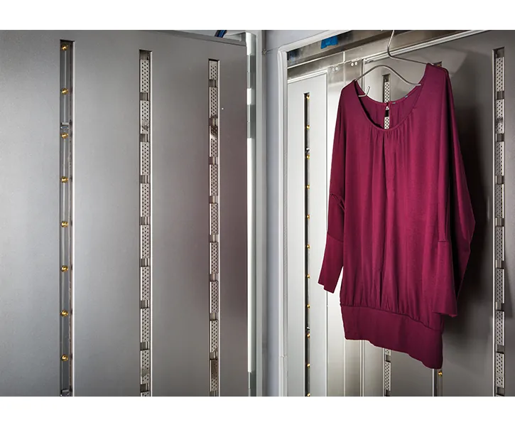
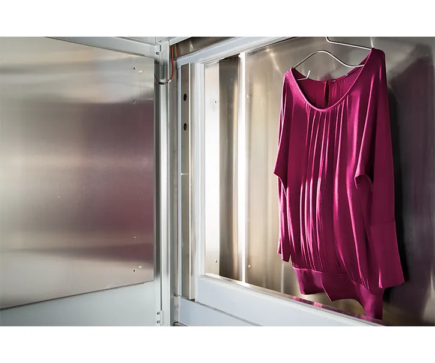

TF 57 Tunnelfinisher
Die automatisierte Lösung zum Finish von Bekleidung mit hohem Volumen. Für alle Textilien am Markt, auch für schwierige Naturfasern.
| Durchlauf | ca. 2500 Teile pro Stunde |
|---|---|
| Bauweise | Module nach Bedarf: Befeuchtung, Dampf, Luft, Ausgang |
| Steuerung | Touch-Display, frei positionierbar |
| Für | Aufbereiter, Textillogistik, Online-Versandhandel, Bekleidungshersteller, medizinischer Bereich |
| Maße und Anschlusswerte | fehlen auf veit.de, von VEIT liefern lassen |

Der Weg durch den Tunnel.
Die Ware hängt am VEIT-Hakensystem und läuft auf dem Conveyor durch vier Einheiten. Eine Walzentrenneinheit hält Vorbehandlung und Finish sauber getrennt.

Befeuchtung
Wassersprühtechnik behandelt Naturfasern vor. Das verbessert das Finish bei Naturmaterialien deutlich und senkt den Dampfverbrauch in den Dampfkammern.
- bessere Ergebnisse bei Naturfasern
- weniger Dampf, weniger Energie

Dampf
Hochdruckdampf lässt die Fasern aufquellen und macht sie formbar. Der Feuchtigkeitsgehalt des Sprühdampfs ist regelbar.
- keine Streifen dank gleichmäßiger Dampfverteilung
- keine Schäden durch heiße Innenwände
- unterer Teil der Dampfkammer für Standardteile abschaltbar

Luft
Die Umluft glättet und streckt das Kleidungsstück und trocknet es zugleich mit Heißluft. Die verlängerte Lufteinheit steigert die Leistung.
- gleichmäßig trocknen und glätten, auch bei hohem Tempo
- Gerüche einfach neutralisieren
Ausgang
Die High-Volume-Abschlusseinheit gibt der Ware zum Schluss Volumen, der „Puppeneffekt“. Ihre Höhe stellt sich automatisch ein.
Weniger Energie pro Teil.
Der TF 57 ist auf Verbrauch gebaut, nicht nur auf Tempo.
- Neue Gebläsegeneration: hohe Leistung bei weniger Energieaufnahme und geringem Geräuschpegel
- Strömungsoptimierte Luftführung minimiert Verluste
- Höheneinstellbare Abschlusseinheit senkt Abwärmeverluste
- Isolierung reduziert den Energieeinsatz
- Wartungsfreie Kettenspannstation, pneumatisches Hakensystem nahezu verschleißfrei
Welche Module braucht Ihr Betrieb?
Durchlauf, Ware und Hallenplatz bestimmen den Aufbau. Ihr Vertriebspartner plant die Anlage mit Ihnen.